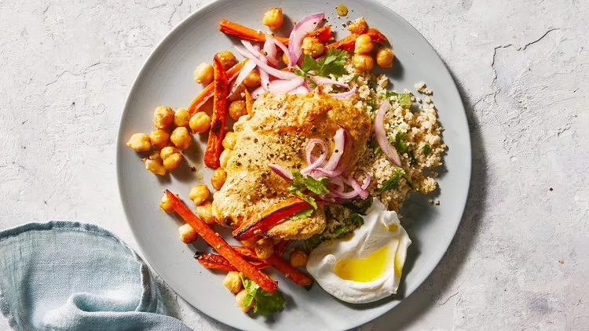

Broiled Yogurt-Marinated Chicken and Chickpeas

Broiled Yogurt-Marinated Chicken and Chickpeas photo by Chris Simpson
In this easy weeknight dinner, chicken thighs get a kick from a quick yogurt-lime marinade before being nestled on a baking sheet with spiced carrots and chickpeas and broiled to perfection.
Ingredients
- half cup plain Greek yogurt, plus more for serving
- 2 teaspoons grated lime zest, plus ¼ cup fresh juice, divided
- 1 tablespoon ras el hanout, such as McCormick, divided
- Kosher salt and freshly ground pepper
- 4 boneless, skinless chicken thighs (about 1 pound total)
- 4 carrots, peeled and cut into ½-inch-thick matchsticks
- ¼ cup extra-virgin olive oil, divided, plus more for drizzling
- 1 can (15.5 ounces) chickpeas, drained and rinsed
- 1 small red onion, halved and thinly sliced
- Cooked couscous and chopped cilantro, for serving
Steps
- Preheat broiler on high with a rack 8 inches below element.
- Stir together yogurt, lime zest, 2 tablespoons lime juice, and 2 teaspoons ras el hanout; season with salt and pepper. Season chicken; add to yogurt mixture. Let stand 20 minutes.
- On a rimmed baking sheet, toss carrots with 2 tablespoons oil; season. Broil 5 minutes.
- Toss chickpeas with 1 tablespoon oil and remaining 1 teaspoon ras el hanout; season. Add to sheet along with chicken.
- Broil, flipping chicken once, until just cooked through and carrots are tender, 8 to 10 minutes a side.
- Toss onion with remaining 2 tablespoons lime juice and 1 tablespoon oil; season.
- Stir a handful of cilantro into couscous.
- Serve chicken, chickpeas, and carrots over couscous with pickled onion, yogurt, more cilantro, and a drizzle of oil.